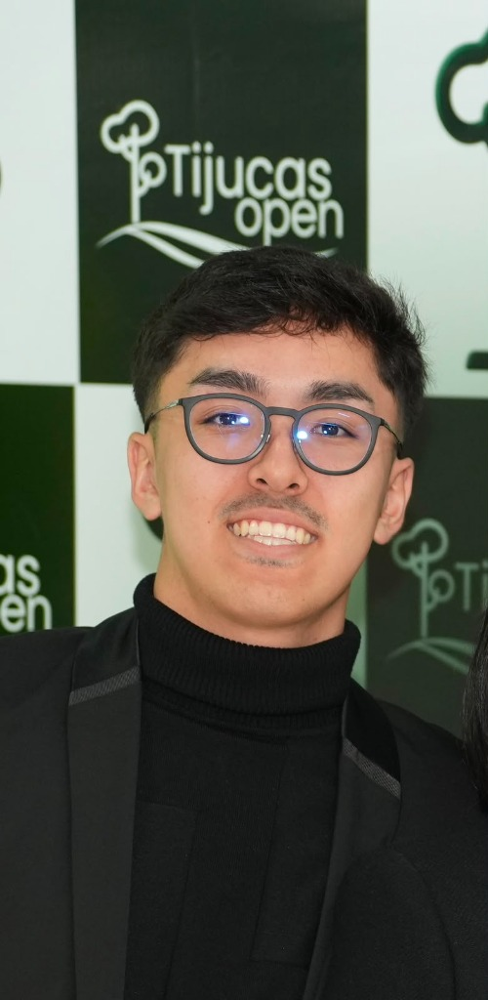

Enzo Watanabe de Lima
Tenho 20 anos, sou um Desenvolvedor em formação, movido por desafios e focado em resultados práticos. Sou proatividade, focado em resultados e priorizo o trabalho em equipe em todos os meus projetos.. Atualmente sou estagiário na Secretaria da Saúde do Paraná (SESA-PR), aplicando código, dados e modelagem de processos em projetos reais de tecnologia.

Perfil
Estou no 6º período de Engenharia de Software na PUCPR, com previsão de conclusão em dezembro de 2027. Busco oportunidades para aplicar e evoluir habilidades técnicas e interpessoais em projetos reais de tecnologia.
No dia a dia, costumo ser a pessoa que organiza o processo: gosto de modelar fluxos, desenvolver soluções, e as vezes realizar a documentação. Faço questão de que o time chegue junto na entrega — sem perder o senso de prioridade quando o prazo aperta.
Linguagens & Dados
Modelagem & Design
Ferramentas
Idiomas
Perfil de Trabalho
Onde estou aplicando o que aprendo
Estágio atual e o impacto prático no time.
SESA — Secretaria de Estado da Saúde do Paraná
Atuo na área de levantamento e processamento de dados, dando suporte a processos que dependem da base do CNES (Cadastro Nacional de Estabelecimentos de Saúde). Porém, meu foco maior tem sido a automação de processos do meu setor — para isso, desenvolvi internamente o CNES Comparador, uma ferramenta que automatiza o cruzamento de registros entre diferentes fontes de dados, reduzindo um processo que antes era manual e demorado. O CNES Comparador é apenas um dos diversos sistemas e ferramentas que venho criando para elevar a eficiência operacional da equipe.
Alguns projetos que já concluí
Projetos acadêmicos e aplicados, do hardware ao processo.
Tijucas — NAS Residencial
Projeto de um servidor NAS doméstico rodando CasaOS, com monitoramento ambiental via ESP32 + sensor DHT-22 para leitura de temperatura e umidade em tempo real. Desenvolvido para a disciplina de Clínica de TIC e concluído neste período.
SPRO IT Solutions — Automação SAP
Projeto de Design Science Research em parceria com a SPRO IT Solutions, propondo a automação do fluxo de aprovação de horas adicionais em SAP de uma empresa parceira. Envolveu modelagem de processos AS-IS / TO-BE seguindo o MR-MPS-SW e diagramação em BPMN.
CNES Comparador
Aplicação desenvolvida para uso interno da equipe na SESA, que compara bases de dados do CNES vindas de fontes diferentes — com normalização de códigos e exportação dos resultados para Excel, agilizando uma checagem que antes era feita manualmente.
Trajetória acadêmica
Da escola até o bacharelado, mais as certificações ao longo do caminho.
Colégio Martinus
Ensino Médio completo.
PUCPR — Bacharelado em Engenharia de Software
Pontifícia Universidade Católica do Paraná. Início em março de 2024, com previsão de conclusão em dezembro de 2027.
Certificações
Quando o expediente acaba, é hora de relaxar
Sou fanático por futebol em qualquer formato: jogo bola com os amigos, assisto a praticamente qualquer partida na TV e encaro qualquer desafio numa boa rodada de FIFA.
E claro, no meio de tudo isso tem um time fixo no coração: Coritiba. Vitória, derrota ou aquele empate de cardíaco — sigo na arquibancada (ou no sofá) torcendo igual.